{
//
const randomDataRange = [-4, 4];
const lossRange = [0, 11];
// Generate random data
const seed = 0.25160386911120525; // a number in [0,1)
const source = d3.randomLcg(seed);
const randn = d3.randomNormal.source(source)(0, 1);
let xTmp = Array.from({length: 100}, randn);
let yTmp = Array.from({length: 100}, randn);
let randomData = prepareData(xTmp, yTmp);
function prepareData(xTmp, yTmp) {
let data = [];
for (let i = 0; i < xTmp.length; i += 1) {
let dataPoint = {"x": xTmp[i], "y": xTmp[i] + yTmp[i]};
data.push(dataPoint)
}
return data;
}
// Loss function
function sumOfSquares(slope) {
let sum = 0;
for (let i = 0; i < randomData.length; i += 1) {
sum += (randomData[i].y - slope * randomData[i].x) ** 2 / randomData.length;
}
return sum;
}
function computeLossCurve(inputRange) {
let loss = [];
let N = 100;
for (let i = 0; i <= 100; i += 1) {
let x = inputRange[0] + i * (inputRange[1] - inputRange[0])/100
let dataPoint = {"x": x, "y": sumOfSquares(x)};
loss.push(dataPoint)
}
return loss;
}
// Data for regression line
let slopeData = [
{x: (slope > 1 || slope < -1) ? randomDataRange[0]/slope : randomDataRange[0], y: (slope > 1 || slope < -1) ? randomDataRange[0] : randomDataRange[0]*slope},
{x: (slope > 1 || slope < -1) ? randomDataRange[1]/slope : randomDataRange[1], y: (slope > 1 || slope < -1) ? randomDataRange[1] : randomDataRange[1]*slope}
];
// Data for loss marker
let markerData = [
{x: slope, y: sumOfSquares(slope) }
];
// Data for loss curve
let lossCurveData = computeLossCurve(inputRange);
const sets = [1, 2];
return html`<div style="display:flex; flex-wrap: wrap;">
${sets
.map((index) =>
Plot.plot({
marginLeft: 40,
marginTop: 20,
width: width / 2 - 2,
height: width / 3 - 2,
x: { domain: index === 1 ? randomDataRange : inputRange, label: index === 1 ? "x" : "Weight"},
y: { domain: index === 1 ? randomDataRange : lossRange, label: index === 1 ? "y" : "Loss"},
marks: [
Plot.frame(),
index === 1
? Plot.dot(randomData, {x: "x", y: "y", fill: "steelblue"})
: Plot.line(lossCurveData, {x: "x", y: "y", stroke: "steelblue"}),
index === 1
? Plot.line(slopeData, {x: "x", y: "y", stroke: "red"})
: Plot.dot(markerData, {x: "x", y: "y", fill: "red", r: 6}),
Plot.text([index], {
x: index === 1 ? (randomDataRange[1] + randomDataRange[0])/2 : (inputRange[1] + inputRange[0])/2,
y: index === 1 ? ((randomDataRange[1] - randomDataRange[0]) * 0.1 + randomDataRange[1]) : ((lossRange[1] - lossRange[0]) * 0.1 + lossRange[1]),
text: (d) => index === 1 ? "Data + Regression Line" : "Mean Squared Error (MSE)",
textAnchor: "middle"
})
],
nice: true
})
)
.flat()}`;
}3 Basic Concepts in Supervised Learning
We have seen in the introduction that supervised learning is a type of machine learning where the model is trained on a labeled dataset, meaning that each input data point \(x\) has a corresponding output label \(y\). The goal of supervised learning is to learn a mapping from inputs to outputs that can be used to make predictions on new, unseen data. We can distinguish between two main types of supervised learning tasks:
- Regression tasks, where the output variable \(y\) is continuous (e.g., predicting house prices, stock prices, etc.).
- Classification tasks, where the output variable \(y\) is categorical (e.g., spam detection, image recognition, etc.).
Depending on the type of task, different models and algorithms are used in supervised learning. This section provides an overview of some common supervised learning models and the key concepts involved in evaluating and improving their performance.
A key element of supervised learning is the training process, where the model learns from the labeled data by adjusting its parameters to minimize a loss function. The loss function quantifies the difference between the predicted outputs and the true labels, guiding the model to improve its predictions over time. This process is typically done using optimization algorithms such as gradient descent. In some special cases, closed-form solutions exist (e.g., linear regression), but in most cases, numerical optimization methods are required. Furthermore, note that the loss fuction used for regression tasks is typically different from the one used for classification tasks but the overall goal remains the same: to minimize the loss and improve the model’s predictive accuracy.
We will start this section with placing two supervised learning models with which you are already familiar, linear regression and logistic regression, in a machine-learning context. We then have a brief look at another important supervised learning model, k-nearest neighbors. Later, we will discuss how to evaluate regression and classification models and introduce the concepts of generalization and overfitting. Finally, we will implement some of these concepts in Python.
3.1 Basic Supervised Learning Models
In this subsection, we will first quickly review linear regression and logistic regression in a machine-learning context. Since you are already familiar with these methods, we will use them to introduce some new concepts such as the decision boundary and feature engineering. Then, we will briefly discuss the k-nearest neighbors algorithm, which is a simple yet powerful supervised learning model that can be used for both regression and classification tasks.
3.1.1 Linear Regression in a ML Context
You have already extensively studied linear regressions in courses of the program, so we will not discuss it in much detail. In machine learning, it is common to talk about weights \(w_i\) and biases \(b_i\) instead of coefficients \(\beta_i\) and intercept \(\beta_0\), i.e., the linear regression model would be written as
\[y_n = b + \sum_{i=1}^m w_i x_{i,n} + \varepsilon_n \qquad n=1,\ldots,N\]
where \(w_i\) are the weights, \(b\) is the bias and \(N\) is the sample size. The weights and biases are found by minimizing the empirical risk function or mean squared error (MSE) loss, which is a measure of how well the model fits the data.
\[\text{MSE}(y,x; w, b) = \frac{1}{N}\sum_{n=1}^N (y_n - \hat{y}_n)^2\]
where \(y_n\) is the true value, \(\hat{y}_n\) is the predicted (or fitted) value for observation \(n\).
In the case of linear regression, there is a closed-form solution for the weights and biases that minimize the MSE. However, the weights and biases have to be found numerically in many other machine learning models since there is no closed-form solution. One can think of this, as the machine learning algorithm automatically moving a slider for the slope Figure 3.2 until the loss is minimized (i.e., the red dot is at the lowest possible point) and the model fits the data as well as possible.
3.1.2 Logistic Regression in a ML Context
Logistic regression is a widely used classification model \(p(y|x;w,b)\) where \(x\in \mathbb{R}^m\) is an input vector, and \(y\in\{0,1,\ldots,C\}\) is a class label. We will focus on the binary case, meaning that \(y\in\{0,1\}\) but it is also possible to extend this to more than two classes. The probability that \(y_n\) is equal to \(1\) for observation \(n\) is given by \[p(y_n=1|x_n;w,b)= \frac{1}{1+\exp(-b-\sum_{i=1}^m w_i x_{i,n})}\]
where \(w=[w_1, \ldots, w_n]'\in \mathbb{R}^m\) is a weight vector, and \(b\) is a bias term. Combining the probabilities for each observation \(n\), we can write the likelihood function as
\[\mathcal{L}(w,b) = \prod_{n=1}^N p(y_n=1|x_n;w,b)^{y_n} \left(1-p(y_n=1|x_n;w,b)\right)^{1-y_n}\]
or taking the natural logarithm of the likelihood function, we get the log-likelihood function
\[\log\mathcal{L}(w,b) = \sum_{n=1}^N y_n \log p(y_n=1|x_n;w,b) + (1-y_n) \log \left(1-p(y_n=1|x_n;w,b)\right).\]
To find the weights and biases, we need to numerically maximize the log-likelihood function (or minimize \(-\log\mathcal{L}(w,b)\)).
Adding a classification threshold \(t\) to a logistic regression yields a decision rule of the form
\[\hat{y}=1 \Leftrightarrow p(y=1|x;w,b) > t,\]
i.e., the model predicts that \(y=1\) if \(p(y=1|x;w,b) > t\).
WarningTerminology: Regression vs. Classification
Do not get confused about the fact that it is called logistic regression but is used for classification tasks. Logistic regression provides an estimate of the probability that \(y=1\) for given \(x\), i.e., an estimate for \(p(y=1|x;w,b)\). To turn, this into a classification model, we also need a classification threshold value for \(p(y=1|x;w,b)\) above which we classify an observation as \(y=1\).
Figure 3.4 shows an interactive example of a logistic regression model. The left-hand side shows the data points and the regression line. The right-hand side shows the log-likelihood function with the red dot showing the value of the log-likelihood for the current value of \(w\). The goal is to find the weight \(w\) in the regression line that maximizes the log-likelihood function (we assumed \(b=0\) for simplicity).
If you enable the classification threshold \(t\), a data point is shown as dark blue if \(p(y=1|x;w,b) > t\), otherwise, it is shown in light blue. Note how the value of the threshold affects the classification of the data points for points in the middle. Essentially, for each classification threshold, we have a different classification model. But how do we choose the classification threshold? This is a topic that we will discuss in the next section.
Logistic regression belongs to the class of generalized linear models with logit as the link function. We could write
\[\log\left(\frac{p}{1-p}\right)= b+\sum_{i=1}^m w_i x_{i,n}\]
where \(p=p(y_n=1|x_n;w,b)\), which separates the linear part on the right-hand side from the logit on the left-hand side.
This linearity also shows up in the linear decision boundary produced by a logistic regression in Figure 3.6. A decision boundary shows how a machine-learning model separates different classes in our data, i.e, how it would classify an arbitrary combination of \((x_1,x_2)\). This linearity of the decision boundary can pose a problem if the two classes are not linearly separable as in Figure 3.6. We can remedy this issue by including higher order terms for \(x_1\) and \(x_2\) such as \(x_2^2\) or \(x_1^3\), which is a type of feature engineering. However, there are many forms of non-linearity that the decision boundary can have and we cannot try all of them. You might know the following phrase from a Tolstoy book
“Happy families are all alike; every unhappy family is unhappy in its own way.”
In the context of non-linear functions, people sometimes say
“Linear functions are all alike; every non-linear function is non-linear in its own way.”
During the course, we will learn more advanced machine-learning techniques that can produce non-linear decision boundaries without the need for feature engineering.
3.1.3 K-Nearest Neighbors
The K-Nearest Neighbors (KNN) algorithm is a simple and intuitive method for classification and regression. The KNN algorithm uses the \(K\) nearest neighbors of a data point to make a prediction. For example, in the case of a regression task, the prediction \(\hat{y}\) for a new data point \(x\) is
\[\hat{y} = \frac{1}{K}\sum_{x_i\in N_k(x)} y_i\]
i.e., the average of the \(K\) nearest neighbors of \(x\). In the case of a classification task, the prediction \(\hat{y}\) is the majority class of the \(K\) nearest neighbors of \(x\).
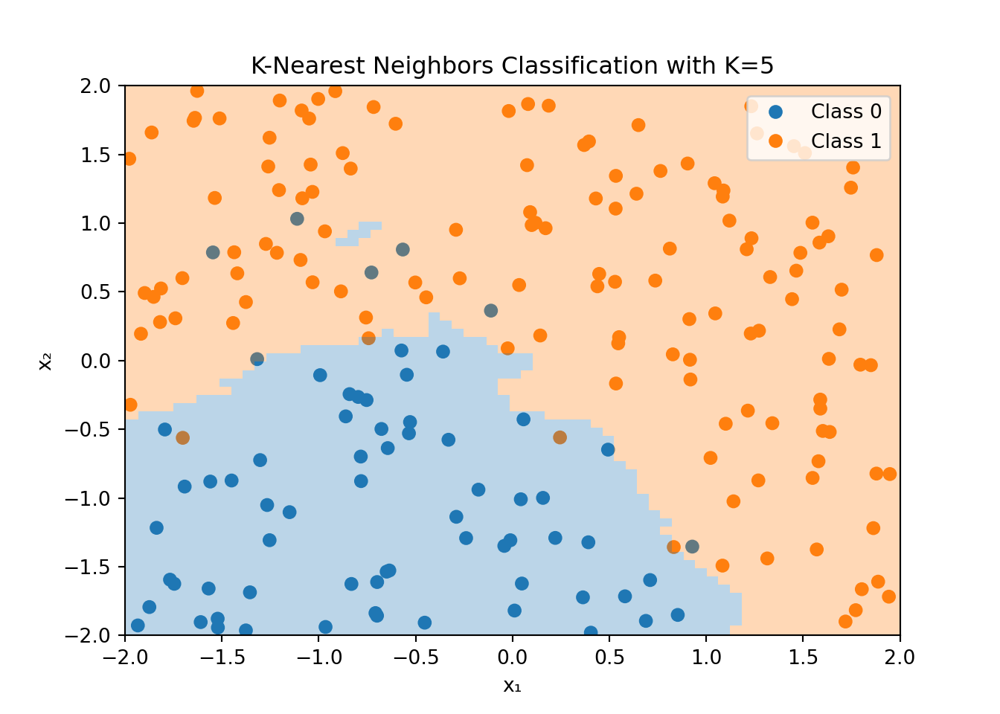
Figure 3.7 shows an example of the K-Nearest Neighbors algorithm applied to the dataset that was used for the logisitic regression example in Figure 3.4. For each point in the feature space, the KNN algorithm looks at the \(K=5\) nearest neighbors and classifies the point based on the majority class of these neighbors. Note that the color of the data point is the true value, while the shaded area shows the classification made by the KNN algorithm.
The decision boundary is highly non-linear and can adapt to the shape of the data. However, this flexibility comes at a cost. The KNN algorithm can be computationally expensive, especially for large datasets, since it needs to compute the distance between the new data point and all other data points in the training set. Additionally, the KNN algorithm is sensitive to the choice of \(K\) and the distance metric used to compute the nearest neighbors.
In the example, above we used the Euclidean distance to compute the nearest neighbors. The squared Euclidean distance between two points \(x\) and \(y\) in \(p\)-dimensional space is defined as
\[d(x_i, x_j) = \sum_{n=1}^p (x_{in} - x_{jn})^2=\lVert x_i - x_j \rVert^2\]
where \(x_{in}\) and \(x_{jn}\) are the \(n\)-th feature of the \(i\)-th and \(j\)-th observation in our dataset, respectively.
Note thate the Euclidean distance can be used in both regression and classification problems since it only applies to the features \(x\) and not the target variable \(y\). However, if the features include categorical variables, we need to use a different distance metric that can accomodate such variables.
3.2 Model Evaluation
Suppose our machine learning model has learned the weights and biases that minimize the loss function. How do we know if the model is any good? In this section, we will discuss how to evaluate regression and classification models.
3.2.1 Regression Models
In the case of regression models, we can use the mean squared error (MSE) as a measure of how well the model fits the data. The MSE is defined as
\[\text{MSE} = \frac{1}{N}\sum_{n=1}^N (y_n - \hat{y}_n)^2,\]
where \(y_n\) is the true value, \(\hat{y}_n\) is the predicted value for observation \(n\) and \(N\) is the sample size. A low MSE indicates a good fit, while a high MSE indicates a poor fit. In the ideal case, the MSE is zero, meaning that the model perfectly fits the data. Related to the MSE is the root mean squared error (RMSE), which is the square root of the MSE
\[\text{RMSE} = \sqrt{\text{MSE}}.\]
The RMSE is in the same unit as the target variable \(y\) and is easier to interpret than the MSE.
Regression models are sometimes also evaluated based on the coefficient of determination \(R^2\). The \(R^2\) is defined as
\[R^2 = 1 - \frac{\sum_{n=1}^N (y_n - \hat{y}_n)^2}{\sum_{n=1}^N (y_n - \bar{y})^2},\]
where \(\bar{y}\) is the mean of the true values \(y_n\). The \(R^2\) is a measure of how well the model fits the data compared to a simple model that predicts the mean of the true values for all observations. The \(R^2\) can take values between \(-\infty\) and \(1\). A value of \(1\) indicates a perfect fit, while a value of \(0\) indicates that the model does not perform better than the simple model that predicts the mean of the true values for all observations. Note that the \(R^2\) is a normalized version of the MSE
\[R^2 = 1 - \frac{N\times\text{MSE}}{\sum_{n=1}^N (y_n - \bar{y})^2}.\]
Thus, we would rank models based on the \(R^2\) in the same way as we would rank them based on the MSE or the RMSE.
There are many more metrics but at this stage, we will only look at one more: the mean-absolute-error (MAE). The MAE is defined as
\[\text{MAE} = \frac{1}{N}\sum_{n=1}^N |y_n - \hat{y}_n|.\]
The MAE is the average of the absolute differences between the true values and the predicted values. Note that the MAE does not penalize large errors as much as the MSE does.
3.2.2 Classification Models
In the case of classification models, we need different metrics to evaluate the performance of the model. We will discuss some of the most common metrics in the following subsections.
Basic Metrics
A key measure to evaluate a classification model, both binary and multiclass classification, is to look at how often it predicts the correct class. This is called the accuracy of a model \[\text{Accuracy} = \frac{\text{Number of correct predictions}}{\text{Total number of predictions}}.\]
Related to this, one could also compute the misclassification rate \[\text{Missclassification Rate} = \frac{\text{Number of incorrect predictions}}{\text{Total number of predictions}}.\]
While these measures are probably the most intuitive measures to assess the performance of a classification model, they can be misleading in some cases. For example, if we have a dataset with 95% of the observations in class 1 and 5% in class 0, a model that always predicts \(y=1\) (class 1) would have an accuracy of 95%. However, this model would not be very useful.
Confusion Matrices
In this and the following subsection, we focus on binary classification problems.
Let \(\hat{y}\) denote the predicted class and \(y\) the true class. In a binary classification problem, we can make two types of errors. First, we can make an error because we predicted \(\hat{y}=1\) when \(y=0\), which is called a false positive (or a “false alarm”). Sometimes this is also called a type I error. Second, we can make an error because we predicted \(\hat{y}=0\) when \(y=1\), which is called a false negative (or a “missed detection”). Sometimes this is referred to as a type II error.
We can summarize the predictions of a classification model in a confusion matrix as seen in Figure 3.8. The confusion matrix is a \(2\times 2\) matrix that shows the number of true positives (TP), true negatives (TN), false positives (FP), and false negatives (FN) of a binary classification model.
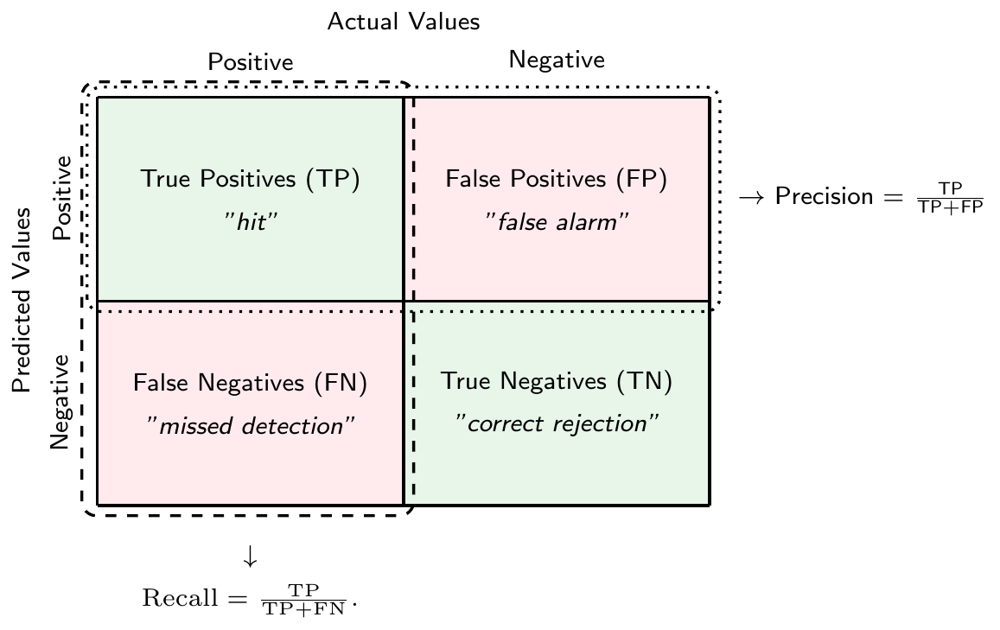
There is a tradeoff between the two types of errors. For example, you could get fewer false negatives by predicting \(\hat{y}=1\) more often, but this would increase the number of false positives. In the extreme case, if you only predict \(\hat{y}=1\) for all observations, you would have no false negatives at all. However, you would also have no true negatives making the model of questionable usefulness.
WarningConfusion Matrix: Dependence on Classification Threshold \(t\)
The number of true positives, true negatives, false positives, and false negatives in the confusion matrix depends on the classification threshold \(t\).
Note that we can compute the accuracy measure as a function of true positives (TP), true negatives (TN), false positives (FP) and false negatives (FN) \[\text{Accuracy} = \frac{\text{TP}+\text{TN}}{\text{TP}+\text{TN}+\text{FP}+\text{FN}},\]
while the missclassification rate is given by \[\text{Missclassification Rate} = \frac{\text{FP}+\text{FN}}{\text{TP}+\text{TN}+\text{FP}+\text{FN}}.\]
Another useful measure that can be derived from the confusion matrix is the precision. It measures the fraction of positive predictions that were actually correct, i.e., \[\text{Precision} = \frac{\text{TP}}{\text{TP}+\text{FP}}\]
The true positive rate (TPR) or recall or sensitivity measures the fraction of actual positives that were correctly predicted, i.e. \[\text{Recall} = \frac{\text{TP}}{\text{TP}+\text{FN}}.\]
Analogously, true negative rate (TNR) or specificity measures the fraction of actual negatives that were correctly predicted, i.e., \[\text{TNR} = \frac{\text{TN}}{\text{FP}+\text{TN}}\]
Finally, the false positive rate (FPR) measures the fraction of actual negatives that were incorrectly predicted to be positive, i.e., \[\text{FPR} = 1-\text{TNR} = \frac{\text{FP}}{\text{FP}+\text{TN}}\]
Note that all of these measures can be computed for a given classification threshold \(t\). They capture different aspects of the quality of the predictions of a classification model.
NoteMulticlass Classification
In the case of multiclass classification, the confusion matrix is a \(K\times K\) matrix, where \(K\) is the number of classes. The diagonal elements of the confusion matrix represent the number of correct predictions for each class, while the off-diagonal elements represent the number of incorrect predictions.
Note that we can binarize multiclass classification problems, which allows us to use the same metrics as in binary classification. Two such binarization schemes are
- One-vs-Rest (or One-vs-All): In this scheme, we train \(K\) binary classifiers, one for each class to distinguish it from all other classes. We can then use the class with the highest score as the predicted class for a new observation.
- One-vs-One: In this scheme, we train \(K(K-1)/2\) binary classifiers, one for each pair of classes. We can then use a majority vote to determine the class of a new observation.
Receiver Operating Characteristic (ROC) Curves and Area Under the Curve (AUC)
Figure 3.9 shows a Receiver Operating Characteristic (ROC) curve which is a graphical representation of the tradeoff between the true positive rate (TPR) and the false positive rate (FPR) for different classification thresholds. The ROC curve is a useful tool to visualize the performance of a classification model. The diagonal line in the ROC curve represents a random classifier. A classifier that is better than random will have a ROC curve above the diagonal line. The closer the ROC curve is to the top-left corner, the better the classifier.
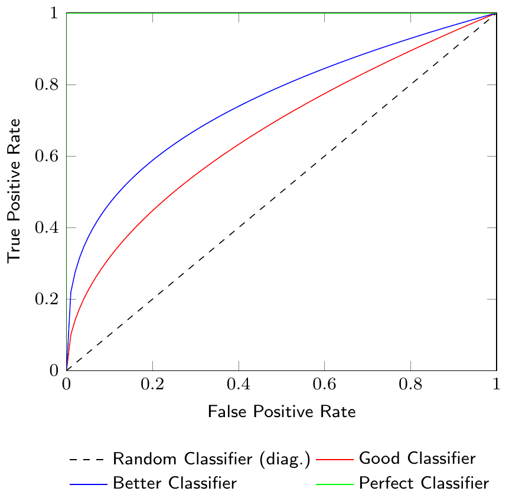
The Area Under the Curve (AUC) of the ROC curve is a measure to compare different classification models. The AUC is a value between 0 and 1, where a value of 1 indicates a perfect classifier and a value of 0.5 indicates a random classifier. Figure 3.10 shows the AUC of a classifier as the shaded area under the ROC curve. Note that the AUC summarizes the ROC curve, which itself represents the quality of predictions of our classification model at different thresholds, in a single number.
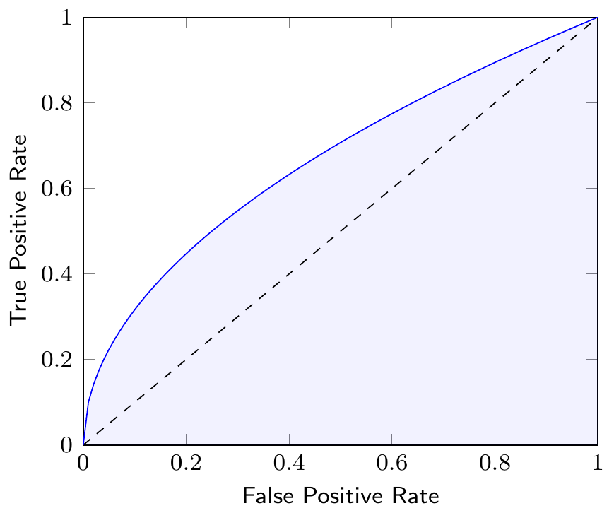
3.3 Generalization and Overfitting
Typically, we are not just interested in having a good fit for the dataset on which we are training a classification (or regression) model, after all, we already have the actual classes or realization of predicted variables in our dataset. What we are really interested in is that a classification or regression model generalizes to new data.
However, since the models that we are using are highly flexible, it can be the case that we have a very high accuracy during the training of our model but it does not provide good predictions when used on new data. This situation is called overfitting: we have a very good fit in our training dataset, but predictions for new data inputs are bad.
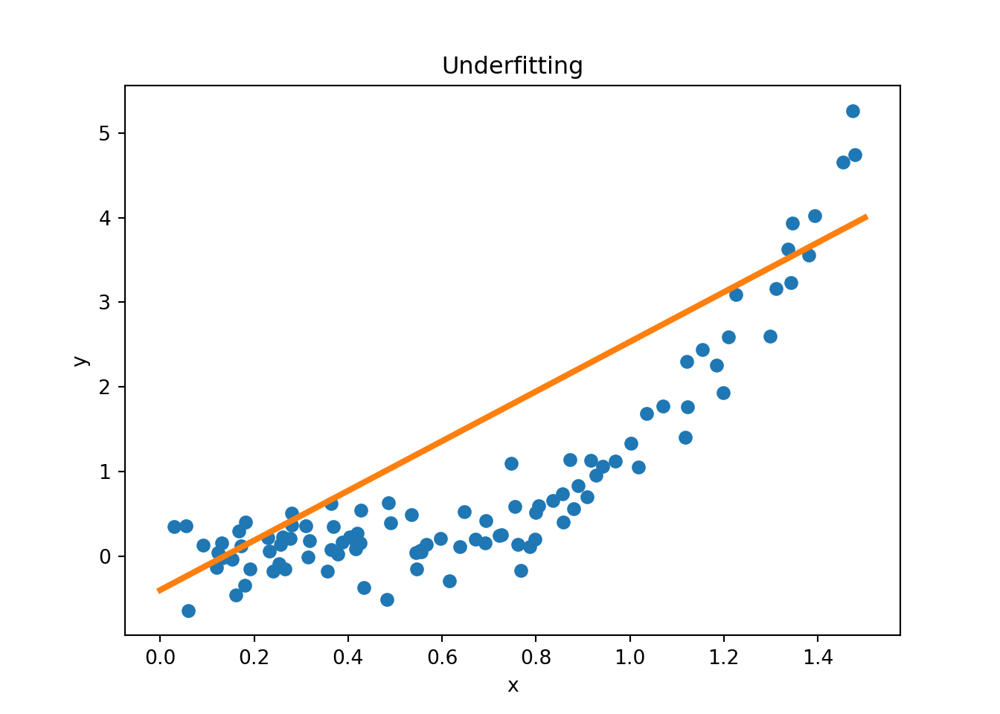
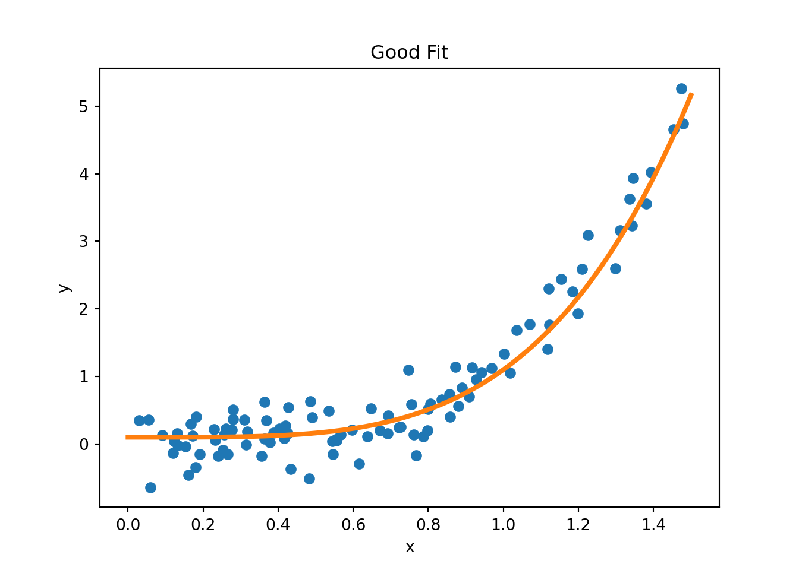
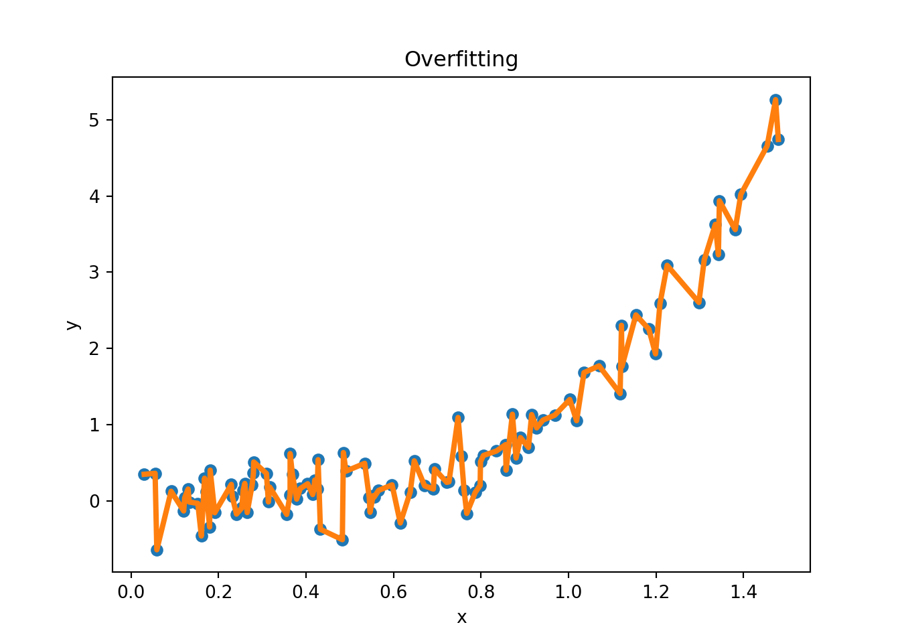
Figure 3.11 provides examples of overfitting and underfitting. The blue dots represent the training data \(x\) and \(y\), the orange curve represents the fit of the model to the training data. The left plot shows an example of underfitting: the model is too simple to capture the underlying structure of the data. The middle plot shows a “good fit”: the model captures the underlying structure of the data. The right plot shows an example of overfitting: the model is too complex and captures the noise in the data.
Figure 3.13 shows an example where the true data generating process (DGP) is a quadratic function but there is some added noise when we sample from the DGP. The blue dots represent the training data, the orange curve represents the fitted polynomial of order \(k\). For example, if \(k=3\), we run a regresion of \(y\) on \(x^3\), \(x^2\), \(x\) (without an intercept). The left panel shows the training data and the fitted polynomial, the middle panel shows the training RMSE as a function of the polynomial order \(k\), and the right panel shows the test RMSE as a function of the polynomial order \(k\). As we increase the polynomial order (a measure of complexity in our model), the training RMSE decreases (we use more and more flexible models to fit the data), but the test RMSE eventually increases, indicating overfitting.
3.3.1 Bias-Variance Tradeoff
The concepts of bias and variance are useful to understand the tradeoff between underfitting and overfitting. Suppose that data is generated from the true model \(Y=f(X)+\epsilon\), where \(\epsilon\) is a random error term such that \(\mathbb{E}[\epsilon]=0\) and \(\text{Var}[\epsilon]=\sigma^2\). Let \(\hat{f}(x)\) be the prediction of the model at \(x\). One can show that the expected prediction error (or generalization error) of a model can be decomposed into three parts
\[\text{EPE}(x_0) = \mathbb{E}[(Y-\hat{f}(x_0))^2|X=x_0] = \text{Bias}^2(\hat{f}(x_0)) + \text{Var}(\hat{f}(x_0)) + \sigma^2,\]
where \(\text{Bias}(\hat{f}(x_0)) = \mathbb{E}[\hat{f}(x_0)]-f(x_0)\) is the bias at \(x_0\), \(\text{Var}(\hat{f}(x_0)) = \mathbb{E}[\hat{f}(x_0)^2]-\mathbb{E}[\hat{f}(x_0)]^2\) is the variance at \(x_0\), and \(\sigma^2\) is the irreducible error, i.e., the error that cannot be reduced by any model. As model complexity increases, the bias tends to decrease, but the variance tends to increase. The following quote from Cornell lecture notes summarizes the bias-variance tradeoff well:
Variance: Captures how much your classifier changes if you train on a different training set. How “over-specialized” is your classifier to a particular training set (overfitting)? If we have the best possible model for our training data, how far off are we from the average classifier?
Bias: What is the inherent error that you obtain from your classifier even with infinite training data? This is due to your classifier being “biased” to a particular kind of solution (e.g. linear classifier). In other words, bias is inherent to your model.
Noise: How big is the data-intrinsic noise? This error measures ambiguity due to your data distribution and feature representation. You can never beat this, it is an aspect of the data.
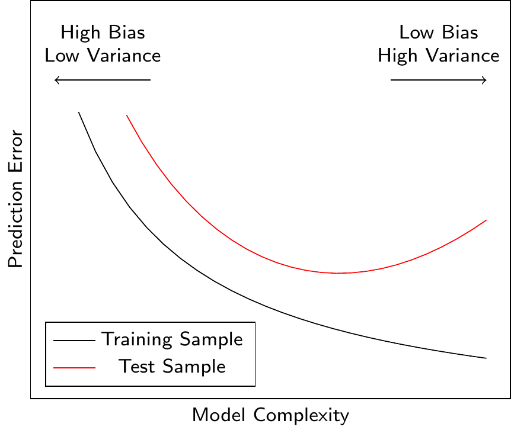
Figure 3.14 shows the relationship between the model complexity and the prediction error. A more complex model can reduce the prediction error only up to a certain point. After this point, the model starts to overfit the training data (it learns noise in the data), and the prediction error for the test data (i.e., data not used for model training) increases. Ideally, we would like to find the model complexity that minimizes the prediction error for the test data. We have seen this behavior in Figure 3.13 where the test RMSE first decreases and then increases as we increase the polynomial order \(k\).
3.3.2 Regularization
One approach to avoid overfitting is to use regularization. Regularization adds a penalty term to the loss function that penalizes large weights. The most common regularization techniques are L1 regularization and L2 regularization. L1 regularization adds the sum of the absolute values of the weights to the loss function, while L2 regularization adds the sum of the squared weights to the loss function.
These techniques are applicable across a large range of ML models and depending on the type of model additional regularization techniques might be available. For example, in neural networks, dropout regularization is a common regularization technique that randomly removes a set of artificial neurons during training.
In the context of linear regressions, L1 regularization is also called LASSO regression. The loss function of LASSO regression is given by
\[\text{Loss} = \text{MSE}(y,x; w) + \lambda \sum_{i=1}^m |w_i|,\]
where \(\text{MSE}(y,x; w)\) refers to the mean squared error (the standard loss function of a linear regression), \(\lambda\) is a hyperparameter that controls the strength of the regularization. Note that LASSO regression can also be used for feature selection, as it tends to set the weights of irrelevant features to zero. Figure 3.15 shows the LASSO regression loss for different levels of \(\lambda\).
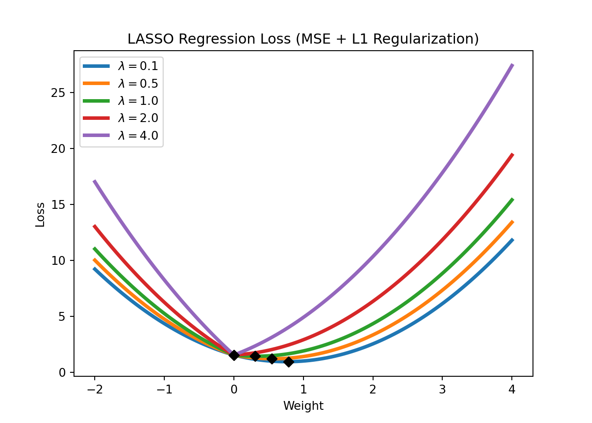
An L2 regularization in a linear regression context is called a Ridge regression. Its loss function is given by
\[\text{Loss} = \text{MSE}(y,x; w) + \lambda \sum_{i=1}^m w_i^2.\]
We will have a closer look at regularization in the application sections. For now, it is important to understand that regularization works by constraining the weights of the model (i.e., keeping the weights small), which can help to avoid overfitting (which might require some weights to be very large). Figure 3.16 shows the Ridge regression loss for different levels of \(\lambda\). Note how the Ridge regression loss is smoother than the LASSO regression loss and that the weights are never set to exactly zero but just get closer and closer to zero.
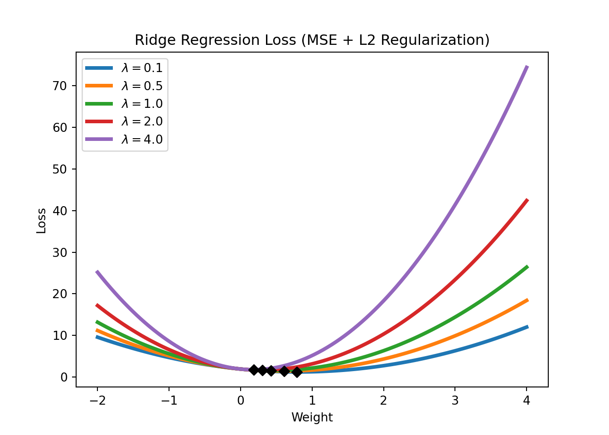
3.3.3 Training, Validation, and Test Datasets
Regularization discussed in the previous section is a method to directly prevent overfitting. However, another approach to the issues is to adjust our evaluation procedure in a way that allows us to detect overfitting. To do this, we can split the dataset into several parts. The first option shown in Figure 3.17 is to split the dataset into a training dataset and a test dataset. The training dataset is used to train the model, while the test dataset is used to evaluate the model. Why does this help to detect overfitting? If the model performs well on the training dataset but poorly on the test dataset, this is a sign of overfitting. If the model performs well on the test dataset, this is a sign that the model generalizes well to new data.
NoteDifference with Terminology in Econometrics/Statistics
In econometrics/statistics, it is more common to talk about in-sample and out-of-sample performance. The idea is the same: the in-sample performance is the performance of the model on the training dataset, while the out-of-sample performance is the performance of the model on the test dataset.
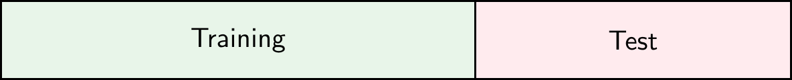
The second option shown in Figure 3.18 is to split the dataset into a training dataset, a validation dataset, and a test dataset. The training dataset is used to train the model, the validation dataset is used to tune the hyperparameters of the model, and the test dataset is used to evaluate the model.
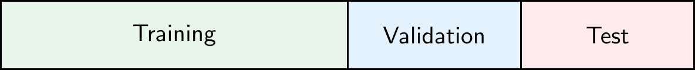
Common splits are 75% training and 30% test, or 80% training and 20% test in Option A. In Option B, a common split is 70% training, 15% validation, and 15% test.
3.3.4 Cross-Validation
Another approach to detect overfitting is to use cross-validation. There are different types of cross-validation but k-fold cross-validation is probably the most common. In k-fold cross-validation, shown in Figure 3.19, the dataset is split into \(k\) parts (called folds). The model is trained on \(k-1\) folds and evaluated on the remaining fold. This process is repeated \(k\) times, each time using a different fold as the test fold. The performance of the model is then averaged over the \(k\) iterations. In practice, \(k=10\) is a common choice. If we set \(k=N\), where \(N\) is the number of observations in the dataset, we call this leave-one-out cross-validation or LOOCV.
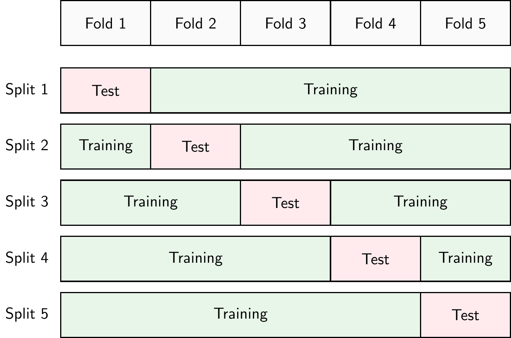
The advantage of cross-validation is that it allows us to use all the data for training and testing. The disadvantage is that it is computationally more expensive than a simple training-test split.
3.4 Python Implementation
Let’s have a look at how to implement a logistic regression model in Python. First, we need to import the required packages
import pandas as pd
import numpy as np
import matplotlib.pyplot as plt
import seaborn as sns
from sklearn.linear_model import LogisticRegression
from sklearn.neighbors import KNeighborsClassifier
from sklearn.preprocessing import StandardScaler, MinMaxScaler
from sklearn.model_selection import train_test_split
from sklearn.metrics import confusion_matrix, accuracy_score, roc_auc_score, recall_score, precision_score, roc_curve
pd.set_option('display.max_columns', 50) # Display up to 50 columnsLet’s download the dataset automatically, unzip it, and place it in a folder called data if you haven’t done so already
from io import BytesIO
from urllib.request import urlopen
from zipfile import ZipFile
import os.path
# Check if the file exists
if not os.path.isfile('data/card_transdata.csv'):
print('Downloading dataset...')
# Define the dataset to be downloaded
zipurl = 'https://www.kaggle.com/api/v1/datasets/download/dhanushnarayananr/credit-card-fraud'
# Download and unzip the dataset in the data folder
with urlopen(zipurl) as zipresp:
with ZipFile(BytesIO(zipresp.read())) as zfile:
zfile.extractall('data')
print('DONE!')
else:
print('Dataset already downloaded!')Then, we can load the data into a DataFrame using the read_csv function from the pandas library
df = pd.read_csv('data/card_transdata.csv')Note that it is common to call this variable df which is short for DataFrame.
This is a dataset of credit card transactions from Kaggle.com. The target variable \(y\) is fraud, which indicates whether the transaction is fraudulent or not. The other variables are the features \(x\) of the transactions.
3.4.1 Data Exploration & Preprocessing
The first step whenever you load a new dataset is to familiarize yourself with it. You need to understand what the variables represent, what the target variable is, and what the data looks like. This is called data exploration. Depending on the dataset, you might need to preprocess it (e.g., check for missing values and duplicates, or create new variables) before you can use it to train a machine-learning model. This is called data preprocessing.
Basic Dataframe Operations
Let’s see how many rows and columns the dataset has
df.shapeThe dataset has 1 million rows (observations) and 8 columns (variables)! Now, let’s have a look at the first few rows of the dataset with the head() method
df.head().TIf you would like to see more entries in the dataset, you can use the head() method with an argument corresponding to the number of rows, e.g.,
df.head(20)Note that analogously you can also use the tail() method to see the last few rows of the dataset.
We can also check what the variables in our dataset are called
df.columnsand the data types of the variables
df.dtypesIn this case, all our variables are floating-point numbers (float). This means that they are numbers that have a fractional part such as 1.5, 3.14, etc. The number after float, 64 in this case refers to the number of bits that are used to represent this number in the computer’s memory. With 64 bits you can store more decimals than you could with, for example, 32, meaning that the results of computations can be more precise. But for the topics discussed in this course, this is not very important. Other common data types that you might encounter are integers (int) such as 1, 3, 5, etc., or strings (str) such as 'hello', 'world', etc.
Let’s dig deeper into the dataset and see some summary statistics
df.describe().TWith the describe() method we can see the count, mean, standard deviation, minimum, 25th percentile, median, 75th percentile, and maximum values of each variable in the dataset.
Checking for Missing Values and Duplicated Rows
It is also important to check for missing values and duplicated rows in the dataset. Missing values can be problematic for machine learning models, as they might not be able to handle them. Duplicated rows can also be problematic, as they might introduce bias in the model.
We can check for missing values (NA) that are encoded as None or numpy.NaN (Not a Number) with the isna() method. This method returns a boolean DataFrame (i.e., a DataFrame with True and False values) with the same shape as the original DataFrame, where True values indicate missing values.
df.isna()or to make it easier to see, we can sum the number of missing values for each variable
df.isna().sum()Luckily, there seem to be no missing values. However, you need to be careful! Sometimes missing values are encoded as empty strings '' or numpy.inf (infinity), which are not considered missing values by the isna() method. If you suspect that this might be the case, you need to make additional checks.
As an alternative, we could also look at the info() method, which provides a summary of the DataFrame, including the number of non-null values in each column. If there are missing values, the number of non-null values will be less than the number of rows in the dataset.
df.info()We can also check for duplicated rows with the duplicated() method.
df.loc[df.duplicated()]Luckily, there are also no duplicated rows.
Data Visualization
Let’s continue with some data visualization. We can use the matplotlib library to create plots. We have already imported the library at the beginning of the notebook.
Let’s start by plotting the distribution of the target variable fraud which can only take values zero and one. We can type
df['fraud'].value_counts()to get the count of each value. We can also use the normalize=True argument to get the fraction of observations instead of the count
df['fraud'].value_counts(normalize=True)We can then plot it as follows
df['fraud'].value_counts(normalize=True).plot(kind='bar')
plt.xlabel('Fraud')
plt.ylabel('Fraction of Observations')
plt.title('Distribution of Fraud')
ax = plt.gca()
ax.set_ylim([0.0, 1.0])
plt.show()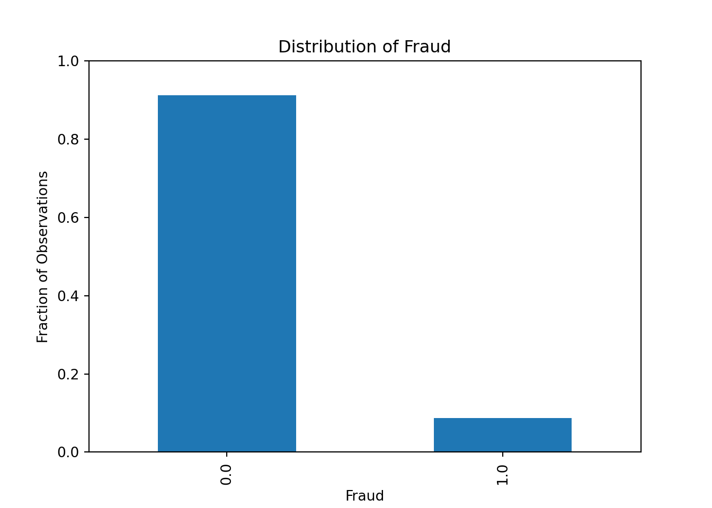
Alternatively, we can plot it as a pie chart
df.value_counts("fraud").plot.pie(autopct = "%.1f")
plt.ylabel('')
plt.show()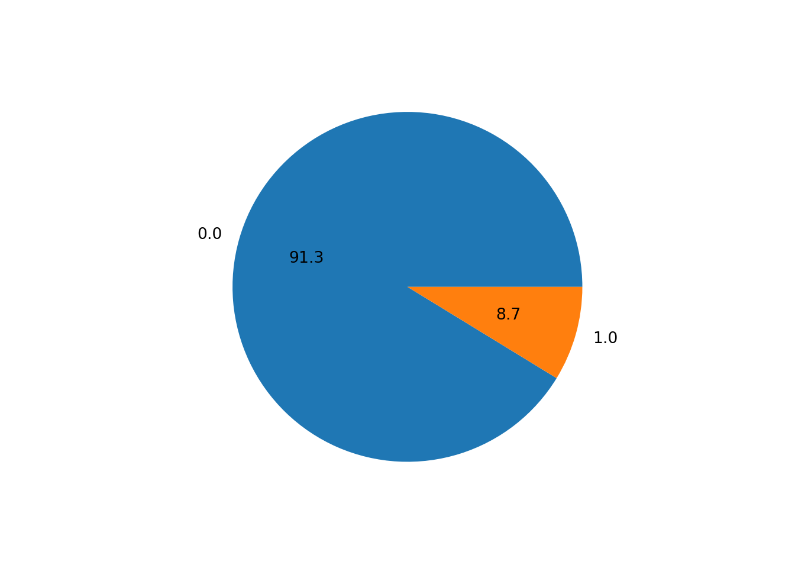
Our dataset seems to be quite imbalanced, as only 8.7% of the transactions are fraudulent. This is a common problem in fraud detection datasets, as fraudulent transactions are usually very rare. We will need to keep this in mind when evaluating our machine learning model: the accuracy measure will be very high even for bad models, as the model can just predict that all transactions are not fraudulent and still get an accuracy of 91.3%.
Let’s look at some distributions. Most of the variables in the dataset are binary (0 or 1) variables. However, we also have some continuous variables. Let’s plot the distribution of the variable ratio_to_median_purchase_price, which is a continuous variable.
df['ratio_to_median_purchase_price'].hist(bins = 50, range=[0, 30])
plt.xlabel('Ratio to Median Purchase Price')
plt.ylabel('Count')
plt.show()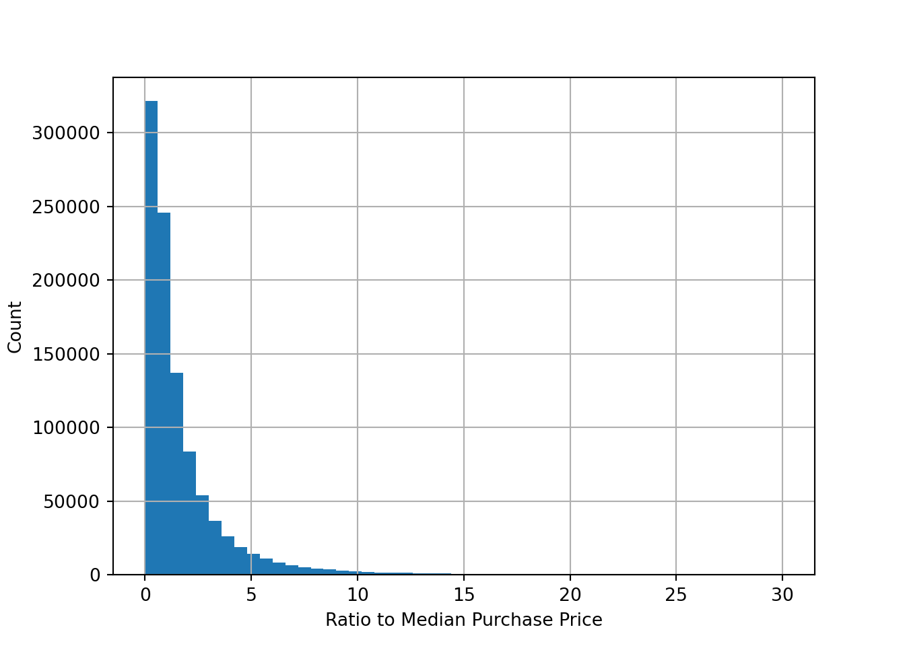
We can also plot the distribution of the variable ratio_to_median_purchase_price by the target variable fraud to see if there are any differences between fraudulent and non-fraudulent transactions
fig, ax = plt.subplots(1,2)
df['ratio_to_median_purchase_price'].hist(bins = 50, range=[0, 30], by=df['fraud'], ax = ax)
ax[0].set_xlabel('Ratio to Median Purchase Price')
ax[1].set_xlabel('Ratio to Median Purchase Price')
ax[0].set_ylabel('Count')
ax[0].set_title('No Fraud')
ax[1].set_title('Fraud')
plt.show()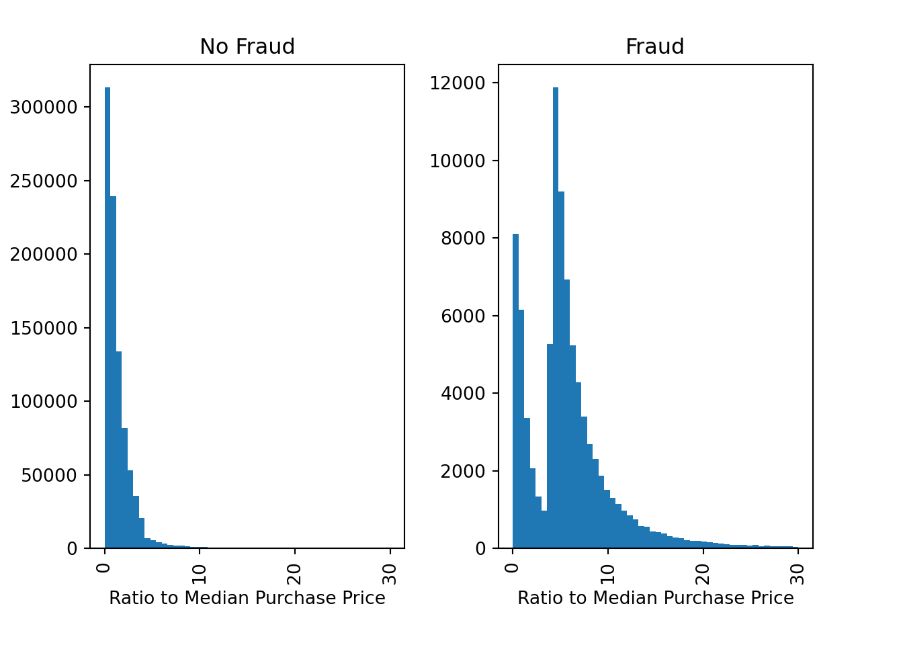
There are indeed some differences between fraudulent and non-fraudulent transactions. For example, fraudulent transactions seem to have a higher ratio to the median purchase price, which is expected as fraudsters might try to make large transactions to maximize their profit.
We can also look at the correlation between the variables in the dataset. The correlation is a measure of how two variables move together
df.corr() # Pearson correlation (for linear relationships)df.corr('spearman') # Spearman correlation (for monotonic relationships)This is still a bit hard to read. We can visualize the correlation matrix with a heatmap using the Seaborn library, which we have already imported at the beginning of the notebook.
corr = df.corr('spearman')
cmap = sns.diverging_palette(10, 255, as_cmap=True) # Create a color map
mask = np.triu(np.ones_like(corr, dtype=bool)) # Create a mask to only show the lower triangle of the matrix
sns.heatmap(corr, cmap=cmap, vmax=1, center=0, mask=mask) # Create a heatmap of the correlation matrix (Note: vmax=1 makes sure that the color map goes up to 1 and center=0 are used to center the color map at 0)
plt.show()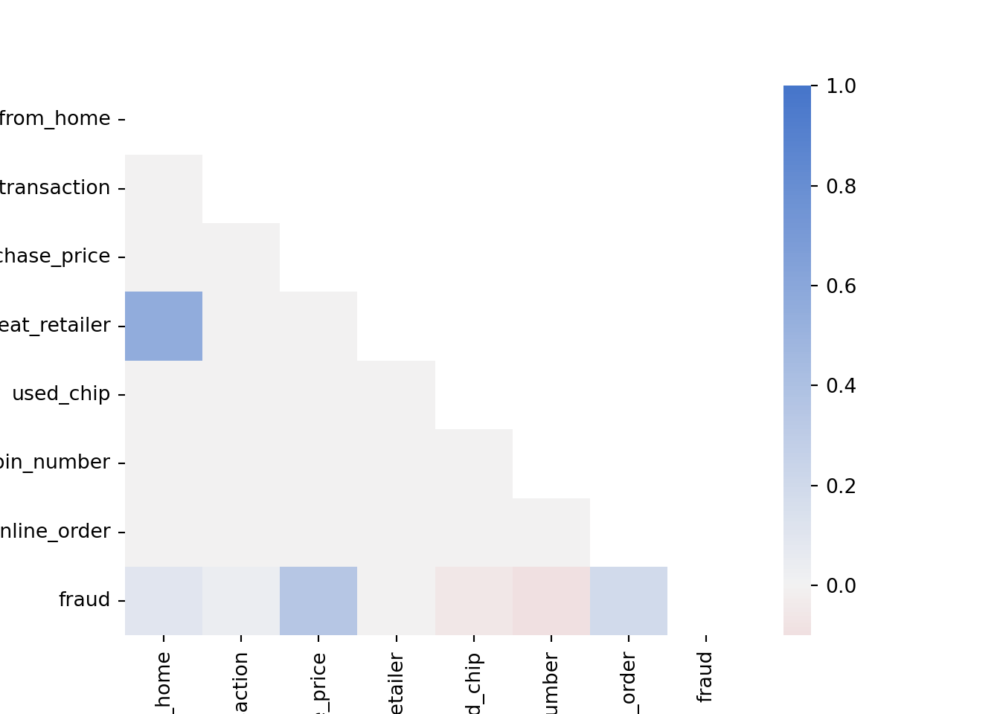
Note how ratio_to_median_purchase_price is positively correlated with fraud, which is expected as we saw in the previous plot that fraudulent transactions have a higher ratio to the median purchase price. Furthermore, used_chip and used_pin_number are negatively correlated with fraud, which makes sense as transactions, where the chip or the pin is used, are supposed to be more secure.
We can also plot boxplots to visualize the distribution of the variables
selector = ['distance_from_home', 'distance_from_last_transaction', 'ratio_to_median_purchase_price'] # Select the variables we want to plot
plt.figure()
ax = sns.boxplot(data = df[selector], orient = 'h')
ax.set(xscale = "log") # Set the x-axis to a logarithmic scale to better visualize the data
plt.show()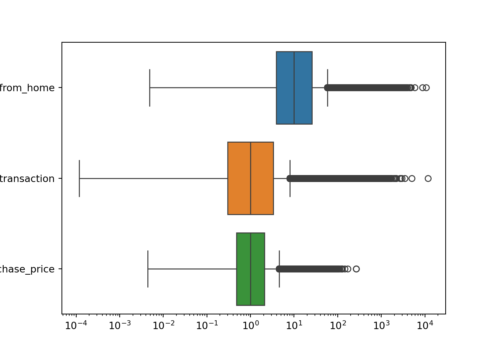
Boxplots are a good way to visualize the distribution of a variable, as they show the median, the interquartile range, and the outliers. Each of the distributions shown in the boxplots above has a long right tail, which explains the large number of outliers. However, you have to be careful: you cannot just remove these outliers since these are likely to be fraudulent transactions.
Let’s see how many fraudulent transactions we would remove if we blindly remove the outliers according to the interquartile range
# Compute the interquartile range
Q1 = df['ratio_to_median_purchase_price'].quantile(0.25)
Q3 = df['ratio_to_median_purchase_price'].quantile(0.75)
IQR = Q3 - Q1
# Identify outliers based on the interquartile range
threshold = 1.5
outliers = df[(df['ratio_to_median_purchase_price'] < Q1 - threshold * IQR) | (df['ratio_to_median_purchase_price'] > Q3 + threshold * IQR)]
# Count the number of fraudulent transactions amoung our selected outliers
outliers['fraud'].value_counts()df['fraud'].value_counts()53092 of 87403 (more than half!) of our fraudulent transactions would be removed if we would have blindly removed the outliers according to the interquartile range. This is a significant number of observations, which would likely hurt the performance of our machine-learning model. Therefore, we should not remove these outliers. It would make the imbalance of our dataset even worse.
Splitting the Data into Training and Test Sets
Before we can train a machine learning model, we need to split our dataset into a training set and a test set.
X = df.drop('fraud', axis=1) # All variables except `fraud`
y = df['fraud'] # Only our fraud variablesThe training set is used to train the model, while the test set is used to evaluate the model. We will use the train_test_split function from the sklearn.model_selection module to split our dataset. We will use 70% of the data for training and 30% for testing. We will also set the stratify argument to y to make sure that the distribution of the target variable is the same in the training and test sets. Otherwise, we might randomly not have any fraudulent transactions in the test set, which would make it impossible to correctly evaluate our model.
X_train, X_test, y_train, y_test = train_test_split(X, y, stratify=y, test_size = 0.3, random_state = 42)Scaling Features
To improve the performance of our machine learning model, we should scale the features. This is especially important for models that are sensitive to the scale of the features, such as logistic regression. We will use the StandardScaler class from the sklearn.preprocessing module to scale the features. The StandardScaler class scales the features so that they have a mean of 0 and a standard deviation of 1. Since we don’t want to scale features that are binary (0 or 1), we will define a small function that scales only the features that we want
def scale_features(scaler, df, col_names, only_transform=False):
# Extract the features we want to scale
features = df[col_names]
# Fit the scaler to the features and transform them
if only_transform:
features = scaler.transform(features.values)
else:
features = scaler.fit_transform(features.values)
# Replace the original features with the scaled features
df[col_names] = featuresThen, we need to run the function
col_names = ['distance_from_home', 'distance_from_last_transaction', 'ratio_to_median_purchase_price']
scaler = StandardScaler()
scale_features(scaler, X_train, col_names)
scale_features(scaler, X_test, col_names, only_transform=True)Note that we only fit the scaler to the training set and then transform both the training and test set. This ensures that the same values for the features produce the same output in the training and test set. Otherwise, if we fit the scaler to the test data as well, the meaning of certain values in the test set might change, which would make it impossible to evaluate the model correctly.
NoteMini-Exercise
Try switching to MinMaxScaler instead of StandardScaler and see how it affects the performance of the model. MinMaxScaler scales the features so that they are between 0 and 1.
3.4.2 Implementing Logistic Regression
Now that we have explored and preprocessed our dataset, we can move on to the next step: training a machine learning model. We will use a logistic regression model to predict whether a transaction is fraudulent or not.
Using the LogisticRegression class from the sklearn.linear_model module, fitting the model to the data is straightforward using the fit method
clf = LogisticRegression().fit(X_train, y_train)We can then use the predict method to predict the class of the test set
clf.predict(X_test.head(5))The actual classes of the first five observations in the test dataset are
y_test.head(5)This seems to match quite well. Let’s have a look at different performance metrics
y_pred = clf.predict(X_test)
y_proba = clf.predict_proba(X_test)
print(f"Accuracy: {accuracy_score(y_test, y_pred)}")
print(f"Precision: {precision_score(y_test, y_pred)}")
print(f"Recall: {recall_score(y_test, y_pred)}")
print(f"ROC AUC: {roc_auc_score(y_test, y_proba[:, 1])}")As expected, the accuracy is quite high since we do not have many fraudulent transactions. Recall that the precision (\(\text{Precision} = \frac{\text{TP}}{\text{TP}+\text{FP}}\)) is the fraction of correctly predicted fraudulent transactions among all transactions transactions predicted to be fraudulent. The recall (\(\text{Recall} = \frac{\text{TP}}{\text{TP}+\text{FN}}\)) is the fraction of correctly predicted fraudulent transactions among the actual fraudulent transactions. The ROC AUC is the area under the curve for the receiver operating characteristic (ROC) curve
# Compute the ROC curve
y_proba = clf.predict_proba(X_test)
fpr, tpr, thresholds = roc_curve(y_test, y_proba[:,1])
# Plot the ROC curve
plt.plot(fpr, tpr)
plt.plot([0, 1], [0, 1], linestyle='--', color='grey')
plt.xlabel('False Positive Rate (FPR)')
plt.ylabel('True Positive Rate (TPR)')
plt.title('ROC Curve')
plt.show()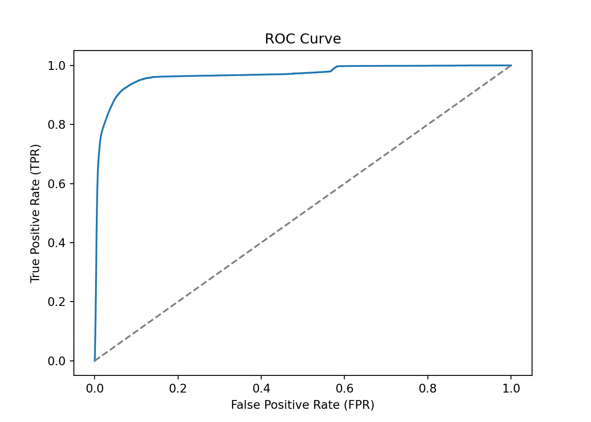
The confusion matrix for the test set can be computed as follows
conf_mat = confusion_matrix(y_test, y_pred, labels=[1, 0]).transpose() # Transpose the sklearn confusion matrix to match the convention in the lecture
conf_matWe can also plot the confusion matrix as a heatmap
sns.heatmap(conf_mat, annot=True, cmap='Blues', fmt='g', xticklabels=['Fraud', 'No Fraud'], yticklabels=['Fraud', 'No Fraud'])
plt.xlabel("Actual")
plt.ylabel("Predicted")
plt.show()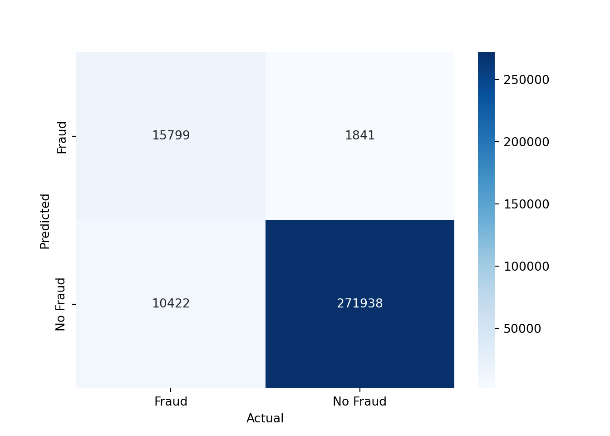
As you can see, we have mostly true negatives and true positives. However, there is still a significant number of false negatives, which means that we are missing fraudulent transactions, and a significant number of false positives, which means that we are predicting transactions as fraudulent that are not fraudulent.
If we would like to use a threshold other than 0.5 to predict the class of the test set, we can do so as follows
# Alternative threshold
threshold = 0.1
# Predict the class of the test set
y_pred_alt = (y_proba[:, 1] >= threshold).astype(int)
# Show the performance metrics
print(f"Accuracy: {accuracy_score(y_test, y_pred_alt)}")
print(f"Precision: {precision_score(y_test, y_pred_alt)}")
print(f"Recall: {recall_score(y_test, y_pred_alt)}")Setting a lower threshold increases the recall but decreases the precision. This is because we are more likely to predict a transaction as fraudulent, which increases the number of true positives but also the number of false positives.
What the correct threshold is depends on the problem at hand. For example, if the cost of missing a fraudulent transaction is very high, you might want to set a lower threshold to increase the recall. If the cost of falsely predicting a transaction as fraudulent is very high, you might want to set a higher threshold to increase the precision.
We can also plot the performance metrics for different thresholds
N = 50
thresholds_array = np.linspace(0.0, 0.999, N)
accuracy_array = np.zeros(N)
precision_array = np.zeros(N)
recall_array = np.zeros(N)
# Compute the performance metrics for different thresholds
for ii, thresh in enumerate(thresholds_array):
y_pred_alt_tmp = (y_proba[:, 1] > thresh).astype(int)
accuracy_array[ii] = accuracy_score(y_test, y_pred_alt_tmp)
precision_array[ii] = precision_score(y_test, y_pred_alt_tmp)
recall_array[ii] = recall_score(y_test, y_pred_alt_tmp)
# Plot the performance metrics
plt.plot(thresholds_array, accuracy_array, label='Accuracy')
plt.plot(thresholds_array, precision_array, label='Precision')
plt.plot(thresholds_array, recall_array, label='Recall')
plt.xlabel('Threshold')
plt.ylabel('Score')
plt.legend()
plt.show()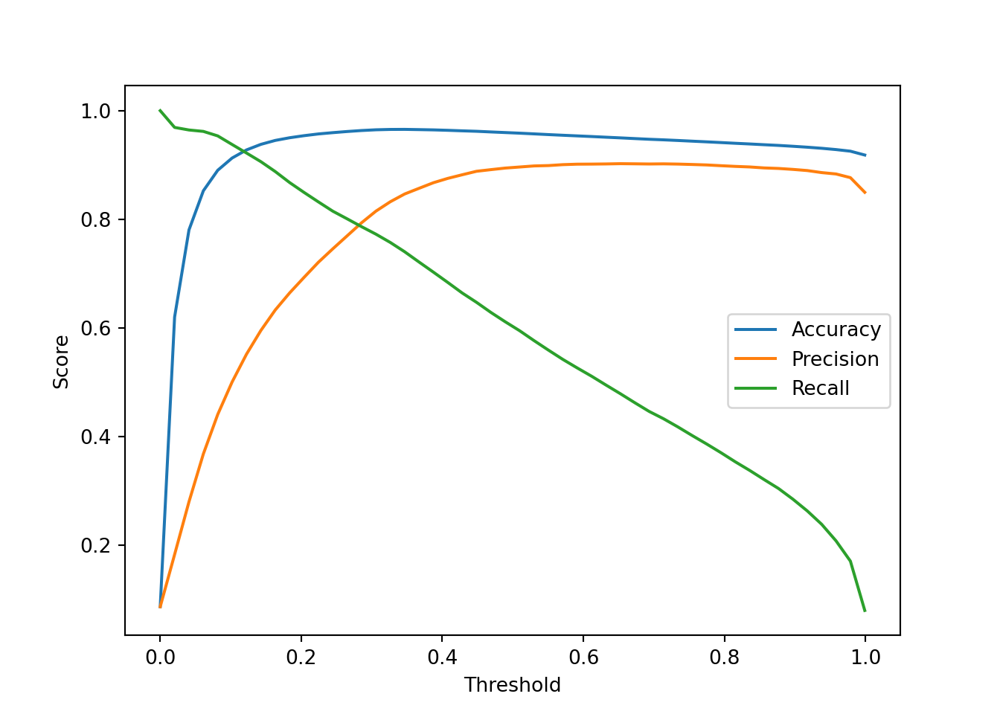
3.4.3 Implementing K-Nearest Neighbors
As an alternative to logistic regression, we can also use a K-Nearest Neighbors (KNN) classifier. The KNN classifier is a simple and intuitive machine learning model that classifies a new observation based on the classes of its k-nearest neighbors in the training set.
Let’s restrict ourselves to variables that are continuous for the KNN classifier
continuous_vars = ['distance_from_home', 'distance_from_last_transaction', 'ratio_to_median_purchase_price']
X_train_knn = X_train[continuous_vars]
X_test_knn = X_test[continuous_vars]We can create a KNN classifier with k=5 and fit it to the training data
knn = KNeighborsClassifier(n_neighbors=5).fit(X_train_knn, y_train)
y_pred_knn = knn.predict(X_test_knn)We can then evaluate the performance of the KNN classifier using the same performance metrics as before
print(f"Accuracy: {accuracy_score(y_test, y_pred_knn)}")
print(f"Precision: {precision_score(y_test, y_pred_knn)}")
print(f"Recall: {recall_score(y_test, y_pred_knn)}")
print(f"ROC AUC: {roc_auc_score(y_test, knn.predict_proba(X_test_knn)[:, 1])}")The KNN classifier seems to perform slightly worse than the logistic regression model. Part of the reason for this is that we only used three features for the KNN classifier, while we used all features for the logistic regression model.
NoteMini-Exercise
Try different values of n_neighbors (k) and plot how it affects the performance of the KNN classifier. Hint: You can use a loop to train the KNN classifier for different values of k and store the performance metrics in arrays. Then, you can plot the performance metrics as a function of k.
NoteMini-Exercise
Implement a 5-fold cross-validation for the logistic regression and K-Nearest Neighbors classifiers. Use the cross_val_score function from the sklearn.model_selection module.
# Import the cross_val_score function
from sklearn.model_selection import cross_val_score
# Apply 5-fold cross-validation to the classifier clf
cv_scores = cross_val_score(clf, X, y, cv=5, scoring='roc_auc')
# Mean of the cross-validation scores
cv_scores.mean()3.4.4 Conclusions
In this notebook, we have seen how to implement a logistic regression model and a K-Nearest Neighbors classifier in Python. We have loaded a dataset, explored and preprocessed it, and trained a logistic regression model and a K-Nearest Neighbors classifier to predict whether a transaction is fraudulent or not. We have evaluated the model using different performance metrics and have seen how the choice of threshold affects the performance of the model.
There are many ways to improve the performance of the models. For example, we could try different machine learning models, or engineer new features. We could also try to deal with the imbalanced dataset by using techniques such as oversampling or undersampling. However, this is beyond the scope of this notebook.